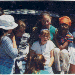
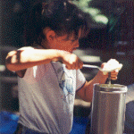
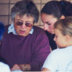

|
Peninsula Girl Scout Day CampHuddart Park, Woodside CA |
|
Peninsula Girl Scout Day CampHuddart Park, Woodside CA |
Peninsula Girl Scout Day Camp is a 10-day adventure in the out-of-doors in beautiful Huddart Park. Activities include outdoor skills, hiking, singing, cooking, crafts, sleeping under the stars and making new friends.
Bus transportation is provided.
Campers are assigned to a unit of 14 - 16 campers going into the same grade. Each unit has two adult Unit Leaders and one or two teenaged Aides. This group stays together for the entire two weeks so the girls bond and make new friends. Our program staff of 30 - 40 adults and 12 teenaged Aides delivers craft, skills and nature projects.
Girls will participate in age appropriate nature, craft and skills activities. Imagine the opportunity to build a camp fire, cook and eat outdoors, hand - crank ice cream, weave a basket, and choose your own leather and craft projects. All campers will even decorate their own special camp T-shirt and wear it to the  camp and ice cream party on the last day! Middle school campers will pick their own unit from some awesome choices: You Go Girl (active high adventure), Pioneers (spend 3 nights at Huddart Park and build your own shelters), Gourmet Chefs (learn how to use a solar and dutch oven), Advanced Arts and Crafts (truly awesome weaving looms and projects) plus 6 more choices.
On the last night of camp, we have a traditional campfire gathering, and campers spend the night at Huddart Park with their Unit Leaders and especially their Unit Aides. This is a time for the entire camp to come together and celebrate that we have spent nine days together and are about to spend the night outdoors.
 Our Administrative Staff receives special training from Girl Scouts of San Francisco Bay Area in matters that concern parents and campers, security, and safety. They are always happy to discuss camp with you before, during or after camp. If you have any questions, just ask.
There is a Camp Health Coordinator at camp to oversee medical needs big and small. In addition to our Health Coordinator who is an RN, many of our camp staff are also RNs, EMTs, MDs or trained in advanced first aid.
Peninsula Girl Scout Day Camp is an all-volunteer staff camp. All volunteers receive pre-camp training as recommended by the American Camping Association and Girl Scouts USA. The subject matter of training is mandated by Girl Scouts USA and the State of California.
We offer special units just for them when you volunteer. On the days you are at camp, your 4 & 5 year olds will have fun in our PIXIE unit exploring the grassy meadow, complete with water play and crafts; your 1st graders will have a blast in our PIXIE unit; and boys 2nd grade and up will have a unit all of their own to explore Huddart Park.